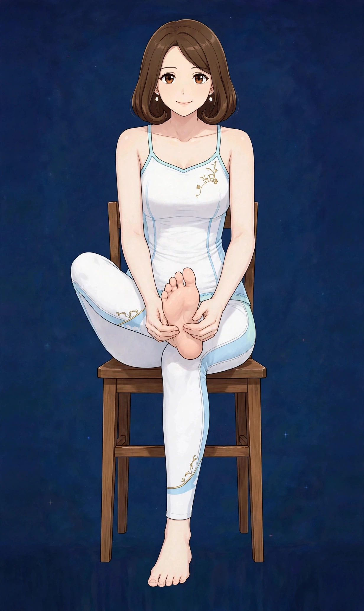

梅田で外反母趾ケア｜美容整体で足裏の使い方と親指の向きにアプローチ｜ステラポラリス 梅田・女性専用美容・見た目

足の親指が人差し指側へ曲がって見える、付け根が靴に当たって気になる——外反母趾は、見た目だけでなく靴選びや歩き方にも関わる悩みです。足裏の使い方と靴の関係から読み解いていきます。
外反母趾はどんな状態か
外反母趾は、足の親指が小指側へ傾き、付け根の関節が内側へ出っ張って見える状態を指す言葉です。親指の傾きそのものに加えて、足裏のアーチの使い方や、体重のかかり方の偏りが背景にあることが多いとされます。
親指は、歩くときに地面を蹴る最後の支点です。親指が使いにくい状態では、足裏の外側や人差し指側に負担が移り、歩き方全体にも影響します。見た目の傾きだけでなく、足裏全体の使い方として眺めることが大切です。なお、痛みが強い場合はサロンでのケアの適応ではありません。受診の目安もあわせて確認してください。
こんなサインはありませんか？ — 外反母趾のチェックリスト
- 親指が人差し指側へ傾いて見える
- 親指の付け根が靴に当たる
- 足裏の人差し指の下にタコができる
- 歩くと足裏が疲れやすい
- 足の指が浮いて地面につきにくい
- 先の細い靴を履くと付け根が気になる
- 足裏のアーチが低くなった気がする
- 夕方になると足全体が重い
当てはまる項目が多いほど、足裏の使い方に偏りが集まっている可能性があります。痛みがある場合は、まず下の「受診の目安」を確認してください。
外反母趾につながりやすい要因
- 靴の形：先の細い靴や、指が圧迫される靴は、親指を小指側へ押し続けます。ヒールの高い靴では体重が前へ寄り、指への負担がさらに増えます。
- 足裏のアーチの低下：土踏まずのアーチが低くなると、足が内側へ倒れ込み、親指の付け根にねじれる力がかかります。アーチの使い方は、指の向きの土台です。
- 足指の筋力の低下：足の指を動かす機会が減ると、指で地面をつかむ力が弱くなり、親指の支えが効きにくくなります。室内で素足の時間が少ない生活も関係します。
- 歩き方のクセ：親指で蹴らず、足の外側で体重を逃がす歩き方では、付け根へのねじれが繰り返されます。歩き方は毎日の積み重ねです。
- 体重のかかり方の偏り：立ち仕事や片足重心の立ち方など、負担の寄り方が固定されると、足裏の特定の場所に力が集まり続けます。
- 体質や関節の柔らかさ：関節が柔らかい体質の方や、家族に同じ悩みがある方は、傾きが出やすい傾向があります。体質そのものは変えられなくても、使い方の見直しは可能です。
図1｜足裏のアーチと指の位置
東洋医学から見た考え方
東洋医学では、足裏は全身の状態が映る場所のひとつと捉え、土踏まずのあたりにある湧泉は代表的なツボとして知られます。下肢の内側には脾経・肝経・腎経が通り、足指の使い方はこれらの経絡の流れとも関連づけられます。
外反母趾の見立てでは、親指の内側を通る脾経のラインや、足裏の支えに関わる腎経のラインを眺めます。施術では、足裏全体の張りをほぐしながら、指が使いやすい状態を目指す進め方を取ります。
代表的なツボ
外反母趾のケアでよく挙げられる、足のツボを紹介します。付け根に痛みや腫れがある場合は、その場所への刺激は避けてください。
図2｜親指の傾きとアーチの関係
おすすめ施術
美容整体・オイルマッサージ
施術では、まず足裏全体とふくらはぎの張りをオイルマッサージでほぐし、足裏の筋肉が動きやすい状態を作ります。そのうえで美容整体で、足指の関節の動きや土踏まずのアーチに、痛みのない範囲で丁寧に触れていきます。
親指の傾きそのものを力で戻すような施術は行いません。足裏の使い方が整って見えるよう、立ち方と歩き方も一緒に確認し、靴の選び方のポイントもお伝えします。
付け根に痛みがある日は、その場所への刺激を避けて施術を組み立てます。90分の中では、脚全体や姿勢を含めたケアも可能で、足への負担の集まり方を一緒に見直します。
当店の施術は、気になる部分だけをなでるのではなく、つながりのある部位まで含めて深い圧でほぐし、巡りを促しながら整えていくのが持ち味です。施術のあとに「体が軽い」「すっきりした」と感じていただける状態を目指して、90分を組み立てます。
自宅でできるセルフケア
外反母趾のセルフケアは「指を動かす・足裏をほぐす・靴を見直す」の組み合わせが基本です。痛みや腫れがある場合はケアを中止し、医療機関にご相談ください。
- 1．足指のグーパー運動足の指を大きく開いて握る動きを、左右10回ずつ。指を動かす力を取り戻す基本の練習で、お風呂上がりなど足が温まったときに行うのがおすすめです。
- 2．足裏のボールほぐしテニスボールを足裏で転がし、土踏まずからかかとまでゆっくりほぐします。体重をかけすぎず、心地よい圧に留めてください。
- 3．タオルつかみ床のタオルを足指でたぐり寄せる動きを左右1分ずつ。親指で地面をつかむ感覚を育てる練習です。
- 4．靴の見直し指先に余裕があり、かかとが安定する靴を選びます。付け根が当たる靴は長時間の使用を避け、インソールの相談も選択肢のひとつです。
図3｜足裏から脚全体へのつながり

場面別の注意
ヒールや先の細い靴の日
指への負担が増える日は、帰宅後に足指の運動と足裏ほぐしを。長時間の着用が続く場合は、付け根の当たらない靴への切り替えも検討してください。
立ち仕事の日
足裏全体が疲れる日は、お風呂で温めながら指を動かすケアが向いています。体重を片側に寄せ続けないよう、立ち位置を時々変える工夫も大切です。
長く歩く予定の前
歩く距離が長い日は、指先に余裕のある靴を選ぶことがいちばんの準備です。新しい靴で長距離を歩くのは避け、履き慣れた靴を選んでください。
受診の目安
次のような場合は、サロンでのケアの前に医療機関への受診をおすすめします。
- 親指の付け根に痛みがあり、赤みや腫れがある
- 傾きが進んできて、指同士が重なってきた
- 痛みで歩くのがつらい、靴が履けない
- しびれや感覚の異常がある
- 糖尿病など足の血行に関わる持病がある
当店は医療機関ではなく、診断は行いません。迷うときは、まずかかりつけの医療機関にご相談ください。
よくある質問
Q．施術で親指の傾きは戻りますか？
骨や関節の傾きそのものを戻すことはできません。施術は、足裏の張りをほぐし、指やアーチが使いやすい状態を目指すケアです。傾きや痛みが進んでいる場合は、まず整形外科への受診をおすすめします。
Q．痛みがあるときも受けられますか？
付け根に痛みや腫れがある場合は、その部位への施術は行いません。痛みが強いときはサロンでのケアより先に、整形外科で状態を確認してください。落ち着いている時期の足裏全体のケアは可能です。
Q．テーピングやサポーターは使ったほうがいいですか？
日常の支えとして使う方もいますが、合う・合わないは状態によって異なります。自己判断で締め付けの強いものを使い続けるより、医療機関や専門店で相談することをおすすめします。
Q．どんな靴を選べばいいですか？
指先の幅に余裕があり、土踏まずが支えられ、かかとが安定する靴が基本です。施術の際に、普段の靴のすり減り方から使い方のクセもお伝えできます。
関連するお悩みページ
関連する経絡ページ
ご予約
ステラポラリス（大阪・梅田／女性専用）｜美容整体・オイルマッサージ 90分 10,000円｜月〜土 17:00〜22:00・完全予約制・中崎町駅徒歩5分
ご予約はLINE公式アカウントで受け付けています。希望の日時と、気になる場所を送ってください。
さらに学びたい方へ：現場で使われる専門書（PR）
このページのテーマに合わせて選んだ本と、当店の施術でも参考にしている専門書です。


※本ブロックのリンクはAmazonアソシエイト・プログラムおよび楽天アフィリエイトによる広告リンクです。使用感の保証をするものではありません。